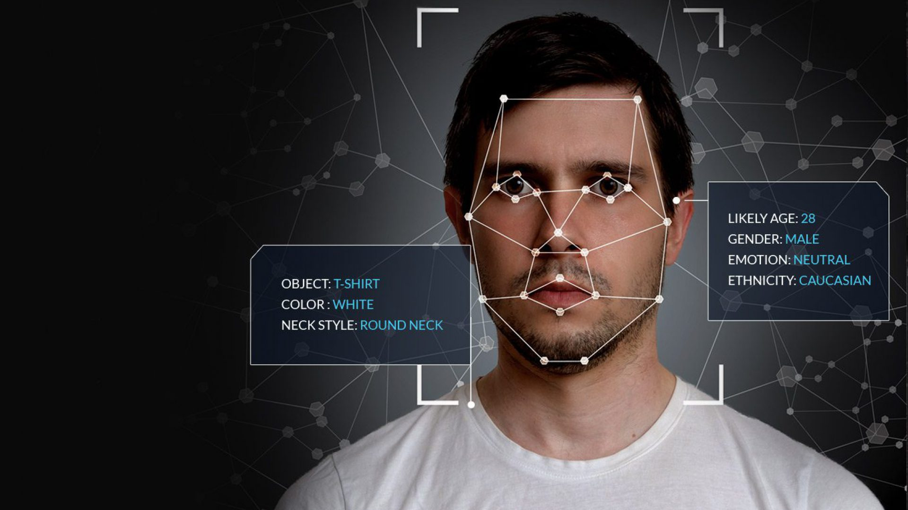

COGNITIVE MULTIMEDIA ANALYTICS
ENABLING CUSTOMER-CENTRIC SOLUTIONS

ENABLING CUSTOMER-CENTRIC SOLUTIONS
Founded in the year 2011, Graymatics takes its roots from Silicon Valley with the vision and commitment to make innovative technology usable for every industry. The company is now based in Singapore along with an incorporation in India.
ABHIJIT SHANBHAG | PRESIDENT & CEOCONTEXTUALLY TARGETED ADS AGAINST IMAGES AND VIDEOS
MAXIMISE CUSTOMER ENGAGEMENT WITH VIDEO ANALYTICS
WE OFFER DEEP UNDERSTANDING OF USER INTERESTS VIA CONTENT ASSOCIATION FROM ALL THE PHOTOS AND VIDEOS BEING SHARED, LIKED, AND PINNED.
OBJECTIONABLE CONTENT SCREENING PROTECT YOUR BRAND AGAINST NUDITY, DRUG ABUSE, WEAPONS AND VIOLENCE.
PROVIDING SOLUTIONS TO PUBLISHERS WITH SIGNIFICANT IMAGE AND VIDEO CONTENT.
SINGAPORE | #02-01, The Ascent, 2 Science Park Dr, Singapore 118222
INDIA | 2nd Floor, 780, 19th Main Rd, Sector 1, HSR Layout, Bengaluru, Karnataka 560102
USA | 4555 Great America Parkway, 3rd Floor, Santa Clara, CA 95054